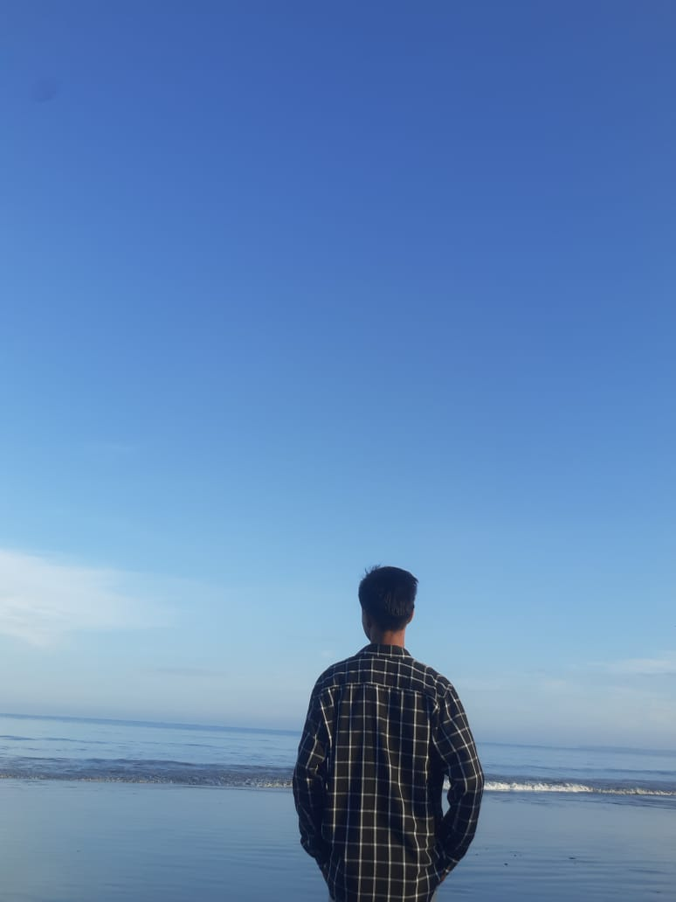

Tentang Deptian Novanri
Deptian Novanri adalah anak pertama dari dua bersaudara. Dia dilahirkan pada tanggal 21 november 2007 di lubuklinggau. Semenjak masih kecil Novan sudah memiliki minat dan bakat yang sangat tinggi sekali terhadap segala sesuatu yang berbau programming. Hal ini disebabkan karena pengaruh dari Ayah Novan, dimana beliau sendiri adalah seorang mantan guru TIK/Informatika di MAN 2 lubuklinggau. Selain terinspirasi dari ayahnya, Novan juga sudah sangat senang dengan film-film hacker dan film-film robot sehingga dia bercita-cita menjadi hacker dan programmer robot
Saat ini Deptian Novanri, sedang menempuh pendidikan di Madrasah Aliyah Negeri 2 lubuklinggau di jurusan Ipa untuk mencapai cita-citanya. Novan sudah banyak belajar mengenai berbagai macam bahasa pemrograman yang sangat menggugah keingintahuannya. Saat ini Deptian Novanri ingin belajar menjadi seorang Full Stack Developer Tolong dukung terus Deptian Novanri ya.